Campeones torneo Cariló 2021
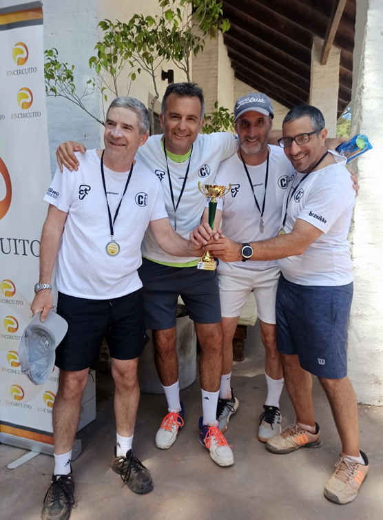
Equipo de Haras Santa María que nos representó en el torneo Cariló 2021
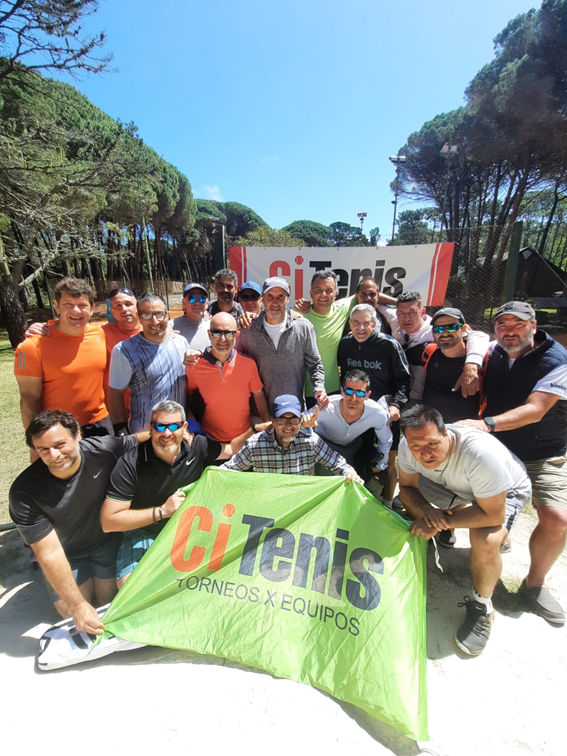
Haras Santa María Campeón de torneo apertura 2021
Torneo por Equipos Cierre de Año 2021
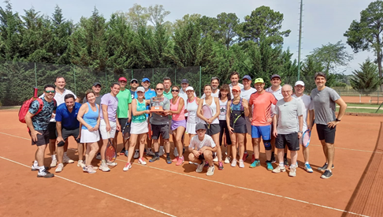
Torneo Escalera Damas Dobles Año 2021
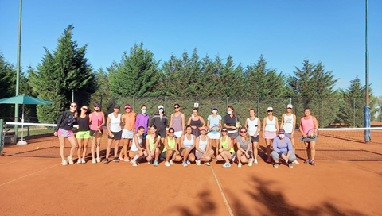
Torneo por Equipos Año 2021
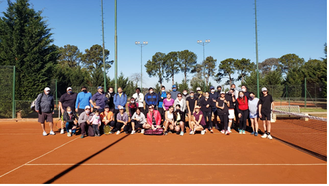
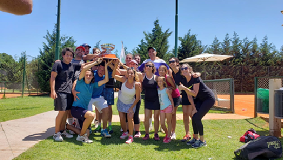
Torneo por equipos Año 2020
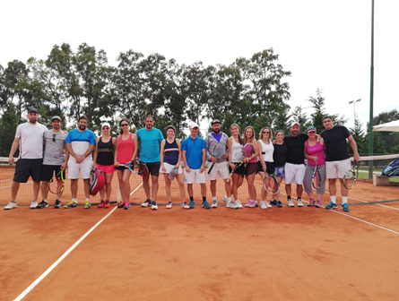
Torneo Mixto Año 2019
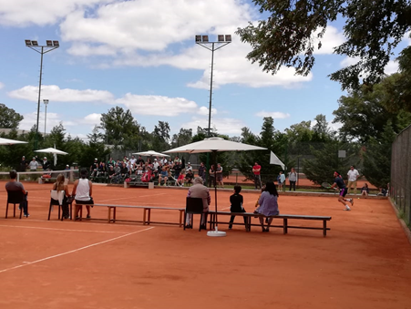
Exhibición de tenis profesional Año 2019
Además de esto, el barrio participa desde el año 2012 en torneos de intercountries donde compite contra otros barrios en las categorías de damas, caballeros y menores. A lo largo de estos años Haras Santa María se ha consagrado campeón en varias oportunidades.
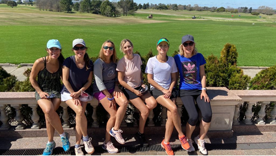
Torneo Citenis Año 2021 – Equipo Damas Categoría Intermedia
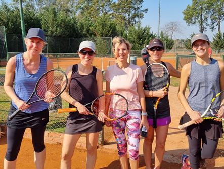
Torneo Citenis Año 2021 – Equipo Damas Categoría Intermedia
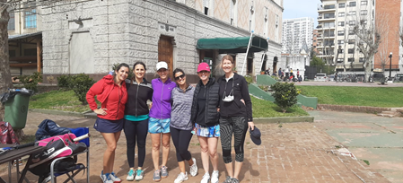
Torneo Citenis Año 2021 – Equipo Damas Categoría 3era
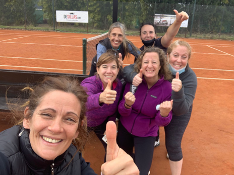
Torneo Citenis Año 2021 – Equipo Damas Categoría 3era
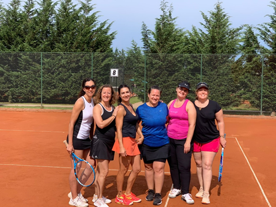
Torneo Citenis Año 2021 – Equipo Damas Categoría 3era
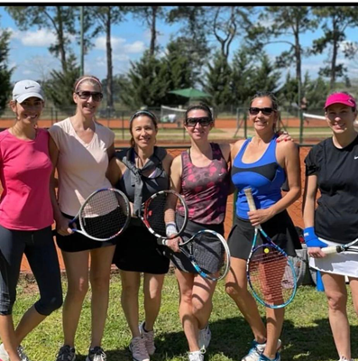
Torneo Citenis Año 2021 – Equipo Damas Categoría 3era
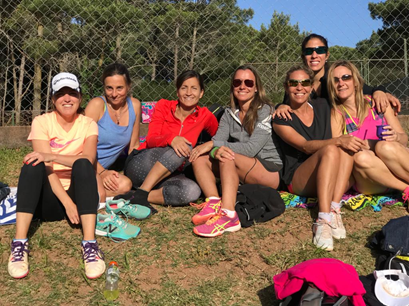
Torneo Citenis Carilo – Equipo Damas Categoría Intermedia
Los menores también han obtenido logros importantes y la escuela de tenis ha tenido un gran crecimiento estos últimos años. Durante el año 2021 menores que iniciaron su entrenamiento en el barrio hoy se encuentran compitiendo en torneos de menores abiertos y regionales de la Asociación Argentina de Tenis.
Escuela de Tenis Menores:
La escuela de menores tiene como objetivos, la introducción de l@s niñ@s a este deporte, enseñar los conceptos básicos del juego y formar progresivamente las herramientas técnicas, tácticas y actitudinales de este deporte.
Horarios y edades:
5-6 años: 10 a 10,45 hs
7-9 años: 11 a 11,55 hs
10-15 años: 12 a 12,55 hs
Escuela de Tenis Adultos:
La escuela de adultos está pensada para aquellos vecinos que quieran explorar y aprender los conceptos básicos de este deporte. Es un ámbito donde prima lo social ante lo competitivo, para que luego los participantes organicen partidos y pongan en práctica lo aprendido durante el fin de semana.
Caballeros Iniciales:
9 a 10 hs (Enero y Febrero)
15 hs (Marzo a Diciembre)
Damas Iniciales:
9 a 10 hs (Enero y Febrero)
16 hs (Marzo a Diciembre)
Contactos
Para inscripción en clases de tenis particulares o en grupo:
Profesor Charly Cavalieri +54 11 3154-8066
Para inscripción en escuelas o para altas en el sistema de reservas:
Starter Franco (de 8 a 17hs) +54 9 11 3642-7949
Starter Alejo (de 17 a 21hs) +54 9 11 6886-3871
Para consultas o sugerencias de cualquier tipo: